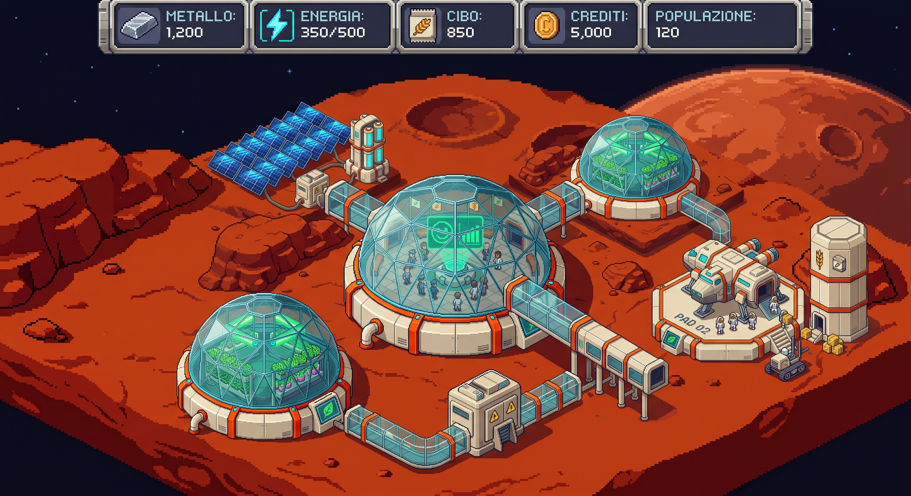
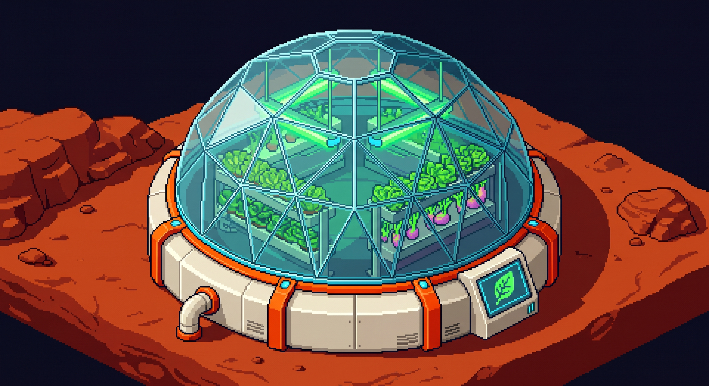
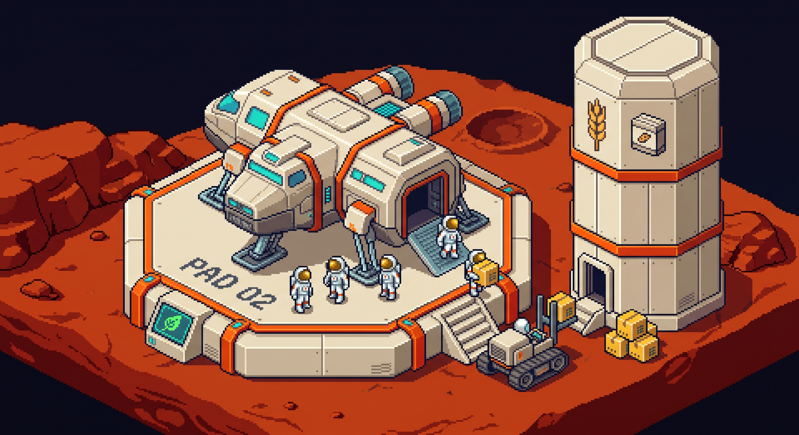
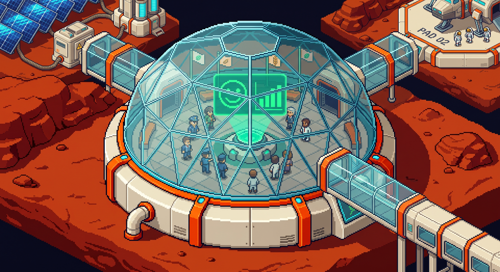

Le Condizioni:
La Logica del City Builder
Come insegnare al nostro gestionale su Marte a prendere decisioni su risorse, costruzioni ed eventi della
colonia con la struttura SE ... ALLORA ... ALTRIMENTI.

Perché un City Builder ha Bisogno di Bivi?
In un simulatore di colonia le risorse cambiano ogni secondo: non possiamo fare sempre la stessa cosa.
Esegue i comandi alla cieca: clicchi su "Costruisci Serra" e il gioco costruisce la serra anche se hai zero metallo in magazzino!
2. Piazza edificio sulla mappa
3. Metallo va a -50 (BUG!)
Risultato: risorse negative, gioco rotto in 10 secondi!
Il gioco controlla lo stato del magazzino prima di fare qualsiasi mossa. Se hai le risorse costruisce, altrimenti ti avvisa!
• Costruisci Serra & sottrai 50
ALTRIMENTI
• Mostra "Metallo insufficiente!"
Il gioco è coerente, solido e divertente da giocare!
Cos'è una Condizione? Solo VERO o FALSO!
Una condizione è una verifica che ha solo due possibili risposte matematiche (Logica Booleana).
La condizione nel gioco si è verificata:
crediti >= 50con crediti = 120energia > consumocon 100 > 80posti_letto == colonicon 10 == 10
La condizione NON si è verificata:
crediti >= 50con crediti = 30energia > consumocon 40 > 80posti_letto == colonicon 6 == 10
Gusti, desideri o azioni:
- "La colonia è carina?"
- "Migliora la serra"
- "I coloni sono stanchi?"
Il motore del gioco capisce solo numeri e confronti esatti!
I 6 Operatori Relazionali di Confronto
I simboli che utilizziamo per confrontare le risorse e i parametri della colonia.
>= e <= si scrivono sempre con il
segno uguale a destra. Non inventare simboli come => o <>!
Attenzione al Bug: = (Assegna) vs == (Confronta)
Nel gestionale svolgono due compiti completamente diversi sulla memoria.
L'Assegnazione (Comando: Deposita/Modifica)
Significa: "Modifica la risorsa! Metti questo nuovo valore dentro la scatola in RAM!"
→ Sovrascrive il conto bancario con 100 crediti.
Azione: cambia la partita!
Il Confronto (Domanda: È uguale a...?)
Significa: "Il giocatore ha esattamente questa quantità? Rispondimi solo VERO o FALSO!"
→ Restituisce VERO se ha 100, FALSO se ne ha 99 o 101.
Domanda: non altera la memoria!
La Selezione a Due Vie: SE ... ALLORA ... ALTRIMENTI
La struttura universale con cui il gioco sceglie quale strada percorrere.
SE <condizione booleana> ALLORA
// Strada 1: eseguita SOLO se VERO
istruzione_A1
istruzione_A2
ALTRIMENTI
// Strada 2: eseguita SOLO se FALSO
istruzione_B1
istruzione_B2
FINE SESi attiva se il test è VERO (es. hai abbastanza risorse). Il ramo ALTRIMENTI viene saltato all'istante.
Si attiva se il test è FALSO (es. risorse insufficienti). Il ramo ALLORA viene ignorato.
La Selezione a Una Via: SE ... ALLORA (Senza Else)
Quando l'azione avviene solo in un caso speciale (es. un bonus o una penalità facoltativa).
Esempio Bonus di Fine Giornata
crediti = crediti + 20
FINE SE
salva_partita()
Cosa succede nel gioco?
- check Se la colonia è felice (VERO): incassa il bonus di 20 crediti e poi salva la partita.
- close Se la colonia non è felice (FALSO): non succede nulla, non perde soldi: salva la partita e prosegue dritto!
ALTRIMENTI si scrive solo quando la condizione falsa richiede
un'azione alternativa.
Lo Schema Classico del City Builder: Verifica & Spesa
Ogni volta che il giocatore vuole costruire un edificio, il gioco segue sempre 3 passi logici.
Il gioco confronta le risorse in magazzino con il costo dell'edificio:
SE risorsa >= costo
Se sono sufficienti, piazza l'edificio e sottrae il costo dal totale:
risorsa = risorsa - costo
Comunica sempre un messaggio a video al giocatore (costruzione avvenuta o fondi insufficienti).
I Diagrammi a Blocchi (Flow Chart)
Le forme geometriche standard per disegnare il flusso dell'algoritmo prima di scrivere codice.
Ingresso dati da tastiera o sensori (LEGGI) e comunicazione a video al giocatore (SCRIVI).
Calcoli matematici, decremento risorse, aggiornamento variabili e assegnazioni di testo.
Test booleano di decisione. Ha 1 freccia in ingresso e 2 frecce in uscita etichettate SÌ/VERO e NO/FALSO.
Delimita i punti di partenza e di arrivo obbligatori dell'algoritmo: nessun flusso può rimanere sospeso.
Esempio Svolto: Costruzione della Cupola Idroponica
Il giocatore vuole costruire una serra idroponica per produrre cibo per la colonia.
Ogni Cupola Idroponica costa esattamente 50 unità di metallo.
Specifiche dell'Algoritmo:
- Input: quantità di
metallodisponibile nel magazzino. - Se il metallo basta (almeno 50): costruisci la serra, sottrai 50 al magazzino e notifica successo.
- Altrimenti: non costruire nulla e avvisa che le risorse sono insufficienti.
- Output: messaggio finale per il giocatore e saldo di metallo rimasto.

Il Flow Chart Risolto & Pseudocodice
Come i blocchi geometrici disegnano visivamente la logica della costruzione.
// 1. Parallelogramma Input
LEGGI metallo
// 2. Rombo Condizione
SE metallo >= 50 ALLORA
// Rettangoli Ramo SÌ
metallo = metallo - 50
msg = "Serra Costruita!"
ALTRIMENTI
// Rettangolo Ramo NO
msg = "Metallo Insufficiente!"
FINE SE
// 3. Parallelogramma Output
SCRIVI msg, metalloEsercizio 1: Il Bilancio Energetico della Colonia
Verifica della produzione solare contro il fabbisogno notturno.
Il sole rosso di Marte sta calando dietro i crateri di Tharsis. Nella sala di controllo suonano i monitor: i coloni rientrano nelle cupole e accendono i riscaldatori notturni. Come responsabile dell'energia della colonia, devi verificare se la carica accumulata dai pannelli solari basterà a coprire il consumo di tutti gli edifici della base:
Se la produzione di energia riesce a coprire o superare il consumo richiesto, la rete è stabile e la colonia trascorre la notte al sicuro. Se invece la produzione è inferiore alla richiesta, si rischia il blackout: occorre segnalare l'emergenza e disconnettere subito le fabbriche.
Disegna il Flow Chart sul quaderno usando le forme corrette (parallelogramma per I/O, rombo per la scelta, rettangoli per lo stato).
1. Ovale: INIZIO
2. Parallelogramma: LEGGI energia_prodotta, energia_richiesta
3. Rombo: energia_prodotta >= energia_richiesta ?
• SÌ: Rettangolo stato = "RETE STABILE: Energia sufficiente"
• NO: Rettangolo stato = "BLACKOUT: Stacca fabbriche!"
4. (I rami si uniscono)
5. Parallelogramma: SCRIVI stato
6. Ovale: FINE
Esercizio 2: Arrivo di Nuovi Coloni e Razioni di Cibo
Controllo scorte alimentari e aggiornamento delle risorse in magazzino.
I retrorazzi della navetta Ares Shuttle sollevano polvere rossa sulla pista n° 2: sono sbarcati nuovi coloni pronti a unirsi alla comunità. Prima di aprire i portelloni e assegnare gli alloggi, il responsabile del magazzino deve consultare il terminale dei silos idroponici, sapendo che ciascun colono consuma esattamente una cassa di cibo a turno:
Se nel magazzino ci sono abbastanza provviste per sfamare tutti i coloni presenti, le razioni vengono distribuite, il magazzino viene scalato della quantità consumata e i coloni sono sazi. Se invece il cibo non basta per tutti, la distribuzione viene bloccata e scatta l'allarme carestia.
Disegna il Flow Chart sul quaderno: ricorda il rettangolo per il calcolo delle scorte rimaste!

1. Ovale: INIZIO
2. Parallelogramma: LEGGI scorte_cibo, numero_coloni
3. Rombo: scorte_cibo >= numero_coloni ?
• SÌ: Rettangolo scorte = scorte - coloni → Rettangolo esito = "Coloni sazi!"
• NO: Rettangolo esito = "CARESTIA: Cibo insufficiente!"
4. (I rami si uniscono)
5. Parallelogramma: SCRIVI esito, scorte_cibo
6. Ovale: FINE
Esercizio 3: L'Indice di Felicità della Colonia
Gestione di tre scenari alternativi per la popolazione marziana.
È venerdì sera nella cupola centrale e si tiene l'assemblea cittadina. Vivere su Marte mette a dura prova la convivenza: i sensori sociali della colonia misurano l'indice di gradimento dei coloni con un punteggio da 0 a 100:
- 75 punti o superiore: coloni entusiasti e colonia fiorente (+50 crediti di bonus tasse).
- Sotto i 40 punti: scoppia una rivolta per il forte malcontento e la produzione si blocca.
- Tutti gli altri casi (tra 40 e 74): situazione regolare e colonia stabile.
Disegna il Flow Chart a cascata: usa due rombi collegati sul ramo NO per gestire i 3 scenari!

1. Ovale: INIZIO → Parallelogramma: LEGGI felicita
2. Rombo 1: felicita >= 75 ?
• SÌ: Rettangolo stato = "COLONIA FIORENTE (+50 Crediti)"
• NO: passa al Rombo 2: felicita < 40 ?
- SÌ: Rettangolo stato = "RIVOLTA: Produzione bloccata!"
- NO: Rettangolo stato = "COLONIA STABILE: Regolare"
3. (Tutti i rami convergono) → Parallelogramma: SCRIVI stato → Ovale: FINE
I 3 Errori Tipici nei Flow Chart & Algoritmi
Prima di consegnare il quaderno, verifica che il tuo diagramma non cada in queste trappole.
Etichette SÌ/NO Mancanti
Disegnare le due frecce in uscita dal rombo senza scrivere chiaramente quale strada corrisponde al SÌ (VERO) e quale al NO (FALSO).
Invertire le Forme
Usare un rettangolo per leggere/scrivere dati a video (anziché il parallelogramma) o usare un parallelogramma per calcoli e decrementi di risorse.
Frecce Aperte nel Vuoto
Non ricongiungere i rami del bivio prima del blocco di output finale. I percorsi dell'algoritmo non possono rimanere sospesi nell'aria: devono confluire verso FINE!
Regole del Laboratorio: Solo Algoritmi su Carta
Quaderno di informatica, penna e righello: disegniamo i Flow Chart completi per il nostro gioco.
Modalità Operativa (Solo Flow Chart)
- draw Forme corrette: usa parallelogrammi per input/output, rettangoli per operazioni e rombi per i bivi.
- alt_route Etichette obbligatorie: scrivi sempre SÌ (o VERO) e NO (o FALSO) su ciascun ramo del rombo.
- merge Chiudi sempre i percorsi: unisci le frecce prima del blocco comune di output e del blocco FINE.
- terminal Niente computer né tabelle: oggi ci concentriamo solo ed esclusivamente sulla progettazione dell'algoritmo grafico!
Le Tre Sfide da Disegnare
Il docente gira tra i banchi per correggere e validare i diagrammi a blocchi al volo!